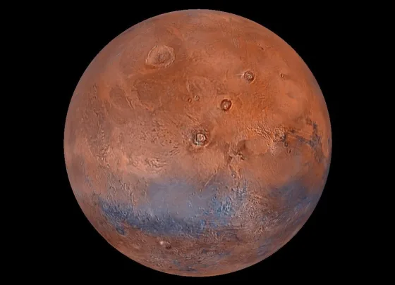
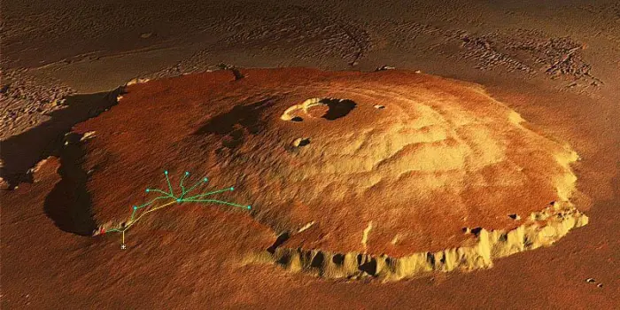

Mars, often called the Red Planet, is one of the most explored worlds beyond Earth. Its towering volcanoes, enormous canyons, ancient river valleys, polar ice caps, and evidence of past liquid water make it one of the most fascinating planets in our Solar System. Scientists continue studying Mars to understand its history and determine whether it could once have supported microbial life.
Mars is the second-smallest planet in the Solar System after Mercury.
Gravity
3.71 m/s²
Gravity on Mars is only about 38% as strong as Earth's.
Length of Year
687 Days
One Martian year is nearly twice as long as an Earth year.
Natural Moons
2
Mars has two tiny moons named Phobos and Deimos.
Mars Overview
Mars is the fourth planet from the Sun and the second-smallest planet in the Solar System. Known as the Red Planet because of iron oxide (rust) covering much of its surface, Mars has fascinated astronomers for centuries. Although cold and dry today, evidence suggests that billions of years ago Mars possessed rivers, lakes, glaciers, and perhaps even a vast northern ocean.
Planet Classification
Planet Type — Terrestrial Planet
Solar System Order — 4th Planet
Average Distance — 227.9 Million km
Orbital Period — 687 Earth Days
Rotation Period — 24h 37m
Average Orbital Speed — 24.1 km/s
Axial Tilt — 25.19°
Physical Characteristics
Diameter — 6,779 km
Radius — 3,389 km
Mass — 6.42 × 10²³ kg
Density — 3.93 g/cm³
Surface Gravity — 3.71 m/s²
Escape Velocity — 5.03 km/s
Natural Satellites — 2
Environment
Atmosphere — Mostly Carbon Dioxide
Average Temperature — −63°C
Surface Pressure — Less than 1% of Earth's
Polar Ice Caps — Present
Global Dust Storms — Common
Known Liquid Water — None on Surface Today
Evidence of Ancient Rivers — Strong
Olympus Mons
Olympus Mons is the tallest known volcano and mountain in the Solar System. Rising about 22 kilometers above the surrounding plains, it is nearly three times taller than Mount Everest. The volcano formed through repeated lava eruptions over millions of years because Mars lacks the moving tectonic plates found on Earth.
Height
22 km
The tallest volcano discovered in the Solar System.
Width
600 km
Its base covers an area comparable to a large country.
Volcano Type
Shield
Built by countless layers of fluid lava over millions of years.
Location
Tharsis Region
Part of the massive Tharsis volcanic plateau.
Ancient Rivers & Lakes
Satellite observations and rover missions have revealed dried river valleys, lake beds, mineral deposits, and delta formations across Mars. These discoveries indicate that liquid water once flowed across the Martian surface billions of years ago, making early Mars significantly different from the cold desert seen today.
River Valleys
Thousands of branching valleys resemble river networks found on Earth.
Ancient Lakes
Several impact craters once contained long-lasting lakes fed by rivers.
Water Ice
Large quantities of frozen water remain beneath the surface and within the polar regions.
Polar Ice Caps
Mars possesses permanent north and south polar ice caps composed mainly of water ice with seasonal layers of frozen carbon dioxide. During winter, carbon dioxide freezes directly from the atmosphere, increasing the size of the polar caps.
North Pole
Contains extensive layers of water ice covered seasonally by frozen carbon dioxide.
South Pole
Stores vast quantities of water ice beneath permanent carbon dioxide ice.
Frozen CO₂
Dry ice forms each Martian winter as temperatures rapidly decrease.
Future Resource
Polar ice may support future human exploration by providing water and oxygen.
Dust Storms
Mars frequently experiences dust storms ranging from small local events to enormous global storms that can cover nearly the entire planet for weeks. Fine dust particles suspended in the atmosphere reduce sunlight and can affect solar-powered spacecraft.
Global Storms
Some storms become large enough to envelop almost the entire planet.
Wind Speed
Strong winds lift fine dust high into the thin Martian atmosphere.
Space Missions
Dust storms can reduce solar power generation and limit rover operations.
Surface Features
Mars displays an extraordinary variety of geological formations, including giant volcanoes, impact craters, lava plains, ancient river valleys, towering cliffs, and one of the largest canyon systems ever discovered.
Largest Canyon
Valles Marineris
Over 4,000 km long and up to 7 km deep.
Impact Craters
Hundreds of Thousands
The heavily cratered surface preserves billions of years of planetary history.
Lava Plains
Extensive
Ancient volcanic eruptions created vast plains across Mars.
Iron Oxide
Abundant
Iron-rich dust gives Mars its distinctive reddish appearance.
Atmosphere & Climate
Mars has a very thin atmosphere composed primarily of carbon dioxide. Although it experiences seasons similar to Earth due to its axial tilt, the planet remains extremely cold, with temperatures varying greatly between day and night.
Mars has two small natural satellites, Phobos and Deimos. They were discovered by American astronomer Asaph Hall in 1877. Scientists believe both moons may be captured asteroids or remnants from a giant impact early in Martian history.
Phobos
Mean Diameter — 22.4 km
Distance from Mars — 6,000 km
Orbital Period — 7.65 Hours
Shape — Irregular
Future — Slowly spiraling toward Mars
Deimos
Mean Diameter — 12.4 km
Distance from Mars — 23,460 km
Orbital Period — 30.3 Hours
Shape — Irregular
Surface — Covered with loose dust
Interesting Facts
Phobos orbits Mars faster than the planet rotates, causing it to rise in the west and set in the east. In tens of millions of years it may either crash into Mars or break apart into a temporary ring.
Mars Rovers & Landers
Mars is the most extensively explored planet after Earth. Robotic spacecraft have transformed our understanding of its geology, atmosphere, climate, and the possibility of ancient microbial life.
Sojourner
NASA's first successful Mars rover, landing in 1997 during the Pathfinder mission.
Spirit & Opportunity
Twin rovers that explored Mars beginning in 2004. Opportunity operated for nearly 15 years.
Curiosity
Landed in Gale Crater in 2012 to investigate whether Mars once supported habitable environments.
Perseverance
Landed in Jezero Crater in 2021 to search for signs of ancient microbial life and collect rock samples.
Ingenuity Helicopter
Ingenuity became the first powered aircraft to achieve controlled flight on another planet. Originally designed as a technology demonstration, it greatly exceeded its planned mission and completed dozens of successful flights while scouting terrain for the Perseverance rover.
Mission
Demonstrated powered flight in Mars' thin atmosphere.
Historic Achievement
First aircraft ever flown on another planet.
Legacy
Opened the possibility of using aerial vehicles during future planetary exploration missions.
Future Human Exploration
Mars is widely considered the leading destination for future human exploration beyond the Moon. Space agencies and commercial organizations are developing technologies required for long-duration missions, surface habitats, and eventual human landings.
Sample Return
Future missions aim to return carefully selected Martian rock samples to Earth for laboratory analysis.
Surface Habitats
Scientists are designing habitats capable of protecting astronauts from radiation, cold temperatures, and dust storms.
Local Resources
Water ice beneath the surface may provide drinking water, oxygen, and rocket fuel for future explorers.
Long-Term Goal
Establish sustainable human exploration of Mars during future decades.
Mars Exploration Timeline
1965
Mariner 4 returned the first close-up images of Mars.
1976
Viking 1 became the first successful spacecraft to land and operate on Mars.
1997
Mars Pathfinder and Sojourner demonstrated rover exploration.
2004
Spirit and Opportunity began their historic exploration missions.
2012
Curiosity landed in Gale Crater using the innovative sky crane system.
2021
Perseverance and Ingenuity began a new era of Martian exploration.
Amazing Mars Facts
🔴 Red Planet
Mars appears red because its surface contains iron oxide, commonly known as rust.
🌋 Largest Volcano
Olympus Mons is the tallest volcano known anywhere in the Solar System.
🌄 Giant Canyon
Valles Marineris stretches more than 4,000 kilometers across Mars.
🧊 Frozen Water
Large deposits of water ice exist beneath the surface and within the polar regions.
🌪 Dust Storms
Some Martian dust storms grow large enough to cover nearly the entire planet.
🛰 Most Explored Planet
Mars has been visited by dozens of orbiters, landers, and rovers from multiple space agencies.
Scientific Importance
Mars provides scientists with a unique opportunity to study planetary evolution, ancient climates, volcanic activity, and the possibility of past life. Because it shares several similarities with early Earth while remaining far less geologically active today, Mars offers valuable clues about how rocky planets form and change over billions of years. Research conducted on Mars also supports planning for future human exploration throughout the Solar System.
Mars: The Red Planet
Mars has inspired human imagination for thousands of years. Ancient civilizations observed its reddish appearance in the night sky and associated it with war because of its blood-like color. Today, Mars represents one of the greatest scientific targets for planetary exploration and the search for life beyond Earth.
Although Mars is now a cold desert world, numerous discoveries indicate that it once possessed a warmer and wetter environment. Ancient river valleys, lake beds, mineral deposits, and sedimentary rocks reveal that liquid water flowed across the Martian surface billions of years ago. These findings suggest that early Mars may have provided environments capable of supporting simple microbial life.
Modern robotic missions continue transforming our understanding of Mars. Orbiters map the planet in remarkable detail, while rovers analyze rocks, drill into the surface, study weather patterns, and search for chemical signatures preserved within ancient sediments. Every mission improves our knowledge of planetary evolution and helps scientists prepare for future human exploration.
Mars is also considered one of humanity's most realistic destinations for future crewed space missions. Scientists are developing technologies to produce oxygen from the Martian atmosphere, extract water from underground ice, generate power using local resources, and build sustainable habitats. The knowledge gained on Mars will help expand human exploration deeper into the Solar System.
Mars Gallery
Representative scientific imagery of Mars and its remarkable surface.

Global View
A global image highlighting Mars' characteristic red appearance caused by iron oxide.

Olympus Mons
The largest known volcano in the Solar System rises high above the surrounding plains.
Perseverance Rover
NASA's Perseverance rover explores Jezero Crater searching for signs of ancient life.
Frequently Asked Questions
Why is Mars called the Red Planet?
Mars appears reddish because its surface contains iron oxide, commonly known as rust.
Could Mars have supported life?
Ancient rivers, lakes, and minerals indicate Mars once had conditions that may have supported microbial life.
How many moons does Mars have?
Mars has two small natural satellites: Phobos and Deimos.
How long is one day on Mars?
A Martian day, called a sol, lasts approximately 24 hours and 37 minutes.
Has anyone landed on Mars?
Many robotic spacecraft have successfully landed on Mars, but no humans have visited the planet yet.
Can humans live on Mars?
Not with current technology alone. Future missions will require habitats, life-support systems, radiation protection, and local resource utilization.